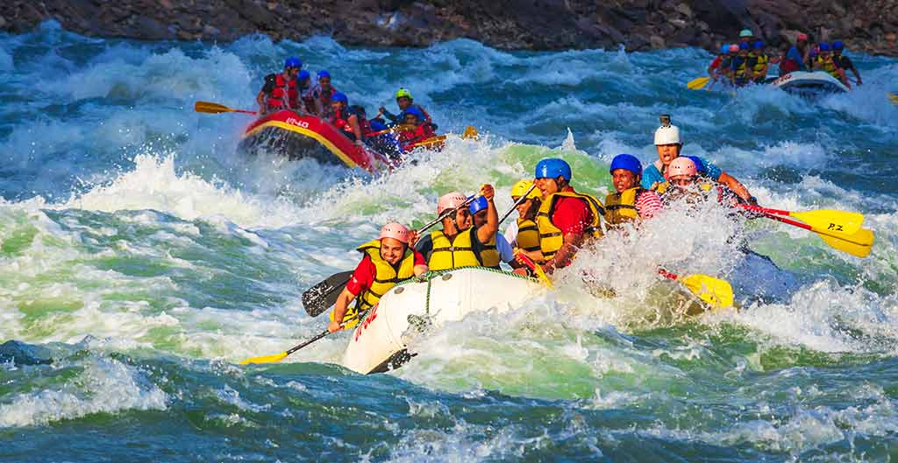

White Water Rafting
Experience the thrill of The Cascade River – a premier white-water rafting destination just three hours from Los Angeles. Nestled in the heart of breathtaking canyons and surrounded by lush forests, The Cascade River offers rapids for all skill levels, from gentle flows to adrenaline-pumping Class V rapids.
History
For decades, The Cascade River has been a top choice for adventure seekers looking to conquer the rapids. With its rich history and exhilarating waters, it continues to be a must-visit destination for rafters from all over the country.
Adventure Awaits You!


Choose your adventure:
- Beginner’s Delight: Enjoy a scenic float with mild rapids, perfect for families and first-time rafters.
- Intermediate Rush: Challenge yourself with a mix of moderate rapids and breathtaking landscapes.
- Expert’s Extreme: For the seasoned adventurer, tackle the intense Class IV and V rapids for the ultimate thrill.